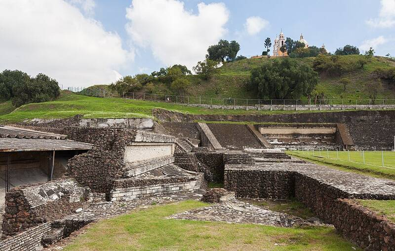

Great Pyramid of Cholula
Puebla, Mexico, about 300 BC to AD 800

The largest pyramid in the world by volume, now a grass-covered hill topped by a Spanish colonial church. 1
Open in the interactive Watcher
Sources
- Great Pyramid of Cholula Wikipedia